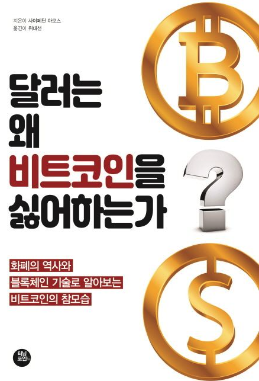

← Back to library
3

웹에서 읽기 가능
달러는 왜 비트코인을 싫어하는가
The Bitcoin Standard
16개 챕터 요약과 퀴즈를 바로 읽을 수 있습니다.
챕터 목록
준비된 챕터 요약으로 바로 들어갑니다.
서문과 프롤로그
돈과 원시 화폐
화폐 금속
정부 화폐 1: 화폐 민족주의와 전간기 붕괴
정부 화폐 2: 브레턴우즈와 법정화폐의 기록
돈과 시간선호 1: 통화 인플레이션, 저축, 자본
돈과 시간선호 2: 혁신과 예술적 번영
자본주의의 정보 시스템 1: 자본시장과 위기
자본주의의 정보 시스템 2: 교역의 건전한 기반
건전 화폐와 개인의 자유 1
건전 화폐와 개인의 자유 2
디지털 화폐
비트코인은 무엇에 좋은가
비트코인에 관한 질문 1
비트코인에 관한 질문 2
감사의 글과 부록